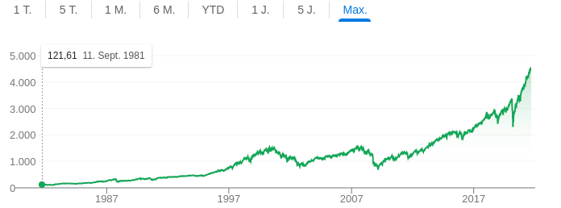

John Bogle
the man who set us free

the sp 500 has risen consistently over the long term for the past 40 years.
In a world where investing was expensive and complex, young investor John Bogle created a way to invest in the financial markets in a way that was simple to understand and execute, cheap and safe. John Bogle opened the doors to the markets to capitalize on our savings and he did it for free through his book "Common Sense on Mutual Funds". John Bogle created passive investing.
The most important aspects of passive investment:
- A financial index is a group of companies that represent an economy because they are among the largest in that economy. Therefore, in the SP500 we have 500 of the largest companies in the United States.
- An index is something like an average of what companies do. The advantage of investing in indices is that you don't have to know which company will grow, because you buying them all.
- Most managers do not beat the index over the long term. Indexing as a way to secure the second position in profitability, which is very high.
- Since we do not know when it will fall and when it will rise, we will buy periodically for at least 15 years. This will mean that when it falls, we will buy cheaper and benefit when it rises.
- We can do it ourselves by buying an ETF from a broker.
- The system does not require any company analysis. Only a software that buys and sells stocks by replicating a model (the index). This makes it extraordinarily cheap (ca. 0.10%).
"When there are many solutions to a problem, choose the simplest one. The biggest enemy of a good plan is dreaming of the perfect plan. Stick with the good plan"
John Bogle
Learn more about John Bogle with Wikipedia